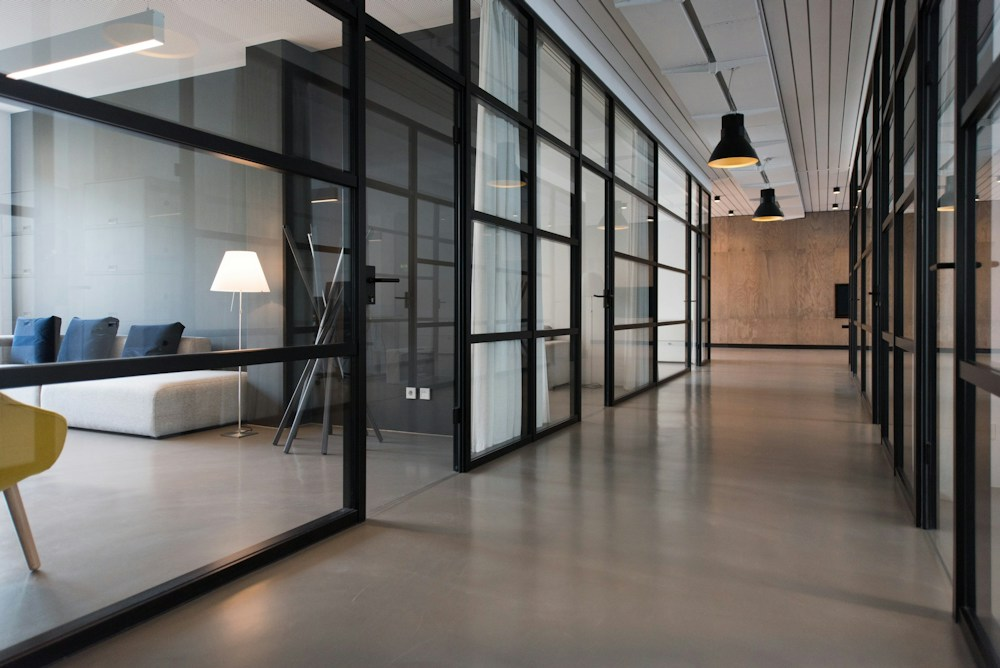
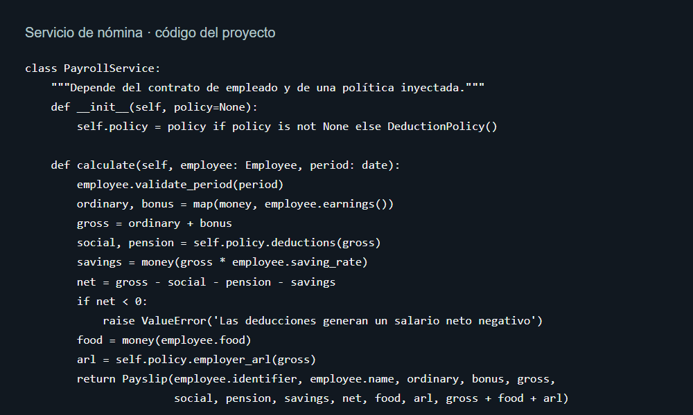
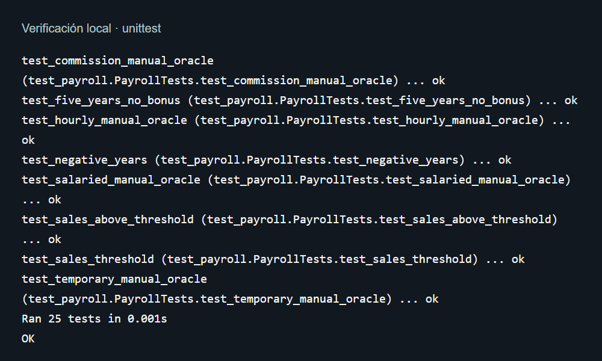

INGENIERÍA DE SOFTWARE · UNIDAD 3Nómina con
UNIVERSIDAD DE CARTAGENANómina con
reglas claras.
Programación orientada a objetos
Jesus Davod Campo
04 modalidades25 pruebas unitarias
01 / REGLAS DEL NEGOCIOCuatro empleados.
Cuatro empleados.
Distintas reglas.
01
Asalariado
Salario fijo + 10% de bono
con más de 5 años.
02
Por horas
Extras sobre 40 horas
a 1,5 veces la tarifa.
03
Por comisión
Base + comisión. Bono del 3%
si las ventas superan $20 millones.
04
Temporal
Salario fijo durante
el período del contrato.

Una modalidad, una regla de cálculo.02 / DISEÑO ORIENTADO A OBJETOSCada responsabilidad,
Cada responsabilidad,
en su lugar.

Empleado
Calcula sus ingresos.
Política
Concentra los descuentos.
Servicio
POO + SOLIDCoordina la liquidación.
Reglas separadas de la interfaz.
03 / DEL DATO AL RESULTADO45 horas.
45 horas.
Un cálculo verificable.
40 horas normales$800.000
5 horas extras$150.000
Salario bruto$950.000
Seguro + pensión−$76.000
Ahorro voluntario−$19.000
NETO A PAGAR$855.000
ARL a cargo de la empresa; tasas configurables.
Tarifa: $20.000 por hora · COP
Supuesto académico: 4% seguro + 4% pensión.ARL a cargo de la empresa; tasas configurables.
25✓pruebas
pruebas
aprobadas.
Cálculos · Fronteras · Validaciones

Analizar → Implementar → Verificar
Código e informe en GitHub ↗github.com/tab-Jesus/IngDeSoftware